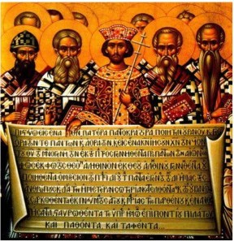

Writings of the Apostolic Fathers: First Clement (c. 120 CE)- The Church of Rome intrudes in Corinth; Ignatius' Letters (c. 120 CE) - seven letters regarding his going to Rome to be martyred; Letter(s) of Polycarp to the Philippians (c.125 CE) - against Docetists and Resurrection-deniers; Martyrdom of Polycarp (c. 155 CE) - "Away with the atheists!"

0115 Jewish Rebellion in Egypt and Cyrene, led by (king?) Lucas/Andreas
0130 Papias Bishop of Hieropolis. (c. 70-c. 155 CE) Christian apologists for early gospel dates rely on the slimmest of evidence, including a very late third-hand testimony of a late second-hand testimony that "Mark" had written a narrative, supposedly based on the experiences of Peter as related by the apostle himself. In the fourth century, Church historian Eusebius quotes Papias of Hierapolis as referring to the "presbyter John." Regarding the bishop of Hierapolis, the Catholic Encyclopedia says, "Of Papias's life nothing is known." According to Eusebius—in disagreement with Irenaeus, who suggests Papias had known the apostle John—Papias has no direct acquaintance with any of the apostles: …Papias himself in the preface to his Exposition of the Sayings of the Lord makes clear that he was never a hearer or eyewitness of the holy apostles, and tells us that he learnt the essentials of the faith from their former pupils. The assumption that the "presbyter John" with whom Papias apparently had a relationship is the apostle John is evidently incorrect. Many of Papias' remarks, according to Eusebius, involve miracles, such as the raising of the dead, which test one’s credulity. Papias is one of the only pieces of evidence Christian apologetics offers as to the dating of the gospels—yet, his testimony concerning these writings of Mark and Matthew is not only second-hand but also too late to possess any value as concerns the earliest of the gospels dates. Moreover, Papias speaks only about a narrative by Mark, which by no means conclusively refers to the canonical Mark as we have it. Nor is the Aramaic gospel of Matthew the same as the canonical Matthew.
0132-0135 Hadrian plans to rebuild Jerusalem as a Hellene city, Aelia Capitolina. Fears of pagan worship on Temple Mount (just as those that preceded the Machabean rebellion) occurring 70 years after the destruction of the Temple (just as the Temple was rebuilt in 516, 70 years after its destruction in 586) inspire Nasi (“king”) Simon Bar Kochba to rise as a military Messiah against the Evil Empire (Rome). A definitive defeat was required before Jews could resign themselves to a “Judaism of the possible.” He is, however, not supported by any rabbis except Akiva, and the revolt fails. Jews are now banned from Jerusalem, and Judea is renamed Syria-Palestina. The Messianic model becomes spiritual rather than military for Jews. The Babylonian rabbinic community takes precedence. What about Jews living outside the Holy Land? Philo of Alexandria is an example of successful adaptation.
~~~~~~~~